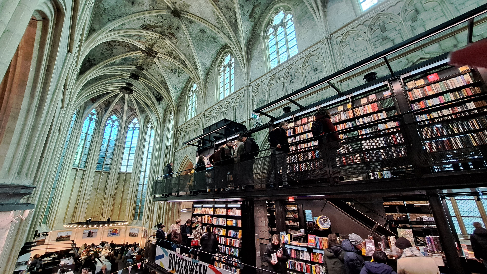
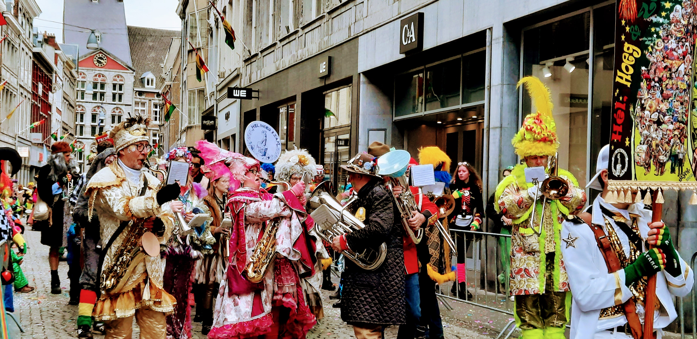

Maastricht
Weetjes:
- Maastricht is de hoofdstad van Limburg.
- Het is één van de oudste steden van Nederland.
- De Sint Servaasbrug is de oudste brug van Nederland.
- Maastricht wordt als enige Nederlandse stad genoemd in het Wilhelmus.
- De musketier D'Artagnan is gesneuveld voor de poort van Maastricht tijdens de belegering van Maastricht door Frankrijk.
Boekhandel Dominicanen

Sinds het najaar van 2006 vind je de bijzondere boekhandel Dominicanen (voorheen Selexyz Dominicanen en Polare Maastricht) in de eeuwenoude
Dominicanenkerk te Maastricht. Tweehonderd jaar geleden verloor de kerk haar sacrale functie. Ze deed sindsdien vele jaren dienst als onder meer slangenhuis,
fietsenstalling en carnavalstempel. Veel Maastrichtenaren hebben hier bijzondere herinneringen zoals bijvoorbeeld de ‘eerste kus’. Deze rijke historie voel je
nog steeds terug in deze prachtige locatie.
Boekhandel Dominicanen heeft een breed en diep assortiment publieksboeken, muziek en boeken voor professionals. Maar
Ook voor de niet-boekliefhebber is dit een plek die je bezocht móet hebben, als je in Maastricht bent.
Op het voormalige priesterkoor van de Dominicanenkerk kun
je terecht voor een overheerlijke cappuccino of een lunch, verzorgd door het befaamde Blanche Dael Coffeelovers (dé Maastrichtse Stadsbranderij). Boekhandel
Dominicanen doet ook dienst als cultureel podium. Er vinden regelmatig lezingen, debatten en muziekoptredens plaats en er is ruimte voor expositie.
Een wandeling door de Dominicanenkerk is een ervaring op zich. Men noemt dit niet voor niets de mooiste boekhandel van de wereld!
bron: www.bezoekmaastricht.nl
Vastelaovend

Kern van de Mestreechter Vastelaovend - zoals het volksfeest in deze stad genoemd wordt - is het befaamde straatcarnaval. Dit ongeorganiseerde, massale geheel zorgt
jaarlijks voor een prettige warboel in de binnenstad. Onderdeel van straatcarnaval zijn de vele kartrekkers.
Carnaval kent een lange traditie in Maastricht, die terugvoert tot waarschijnlijk de vroege middeleeuwen. In 1839 was er voor het eerst sprake van een georganiseerde
vorm van vastenavondviering. De Sociëteit Momus werd dat jaar opgericht om festiviteiten voor de gegoede burgerij te organiseren. Los daarvan werd in de stad het
volkse straat- annex cafécarnaval volop gevierd.
Na de Tweede Wereldoorlog vloeiden deze twee varianten (georganiseerd en ongeorganiseerd) in elkaar tot een samenhangend volksfeest. Dit kwam onder andere door de oprichting van De
Tempeleers, de stadscarnavalsvereniging die zich specifiek op de waarden en tradities van de ‘vasteloavend’ richtte door festiviteiten voor diverse doelgroepen te organiseren.
Inmiddels neemt carnaval een centrale positie in, in het (volks)culturele en sociale leven in de stad. Het is een feest van iedereen. Georganiseerd of ongeorganiseerd, iedereen
viert het feest op zijn of haar eigen wijze binnen een ongeschreven, eeuwenoud kader. De vastelaovend maakt dan ook deel uit van het DNA van Maastricht. Met als vaste, tijdloze
elementen de typische volksaard, de eigen taal, het gemeenschapsgevoel, de humor en de historie van de stad.
bron: www.gemeentemaastricht.nl